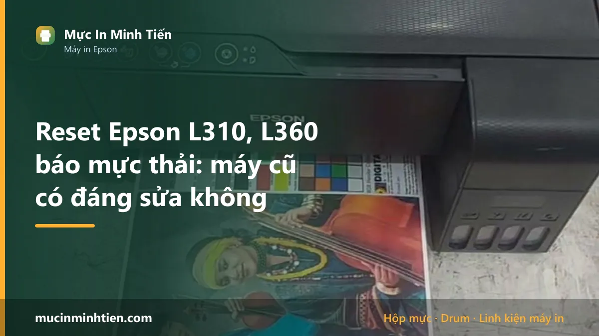
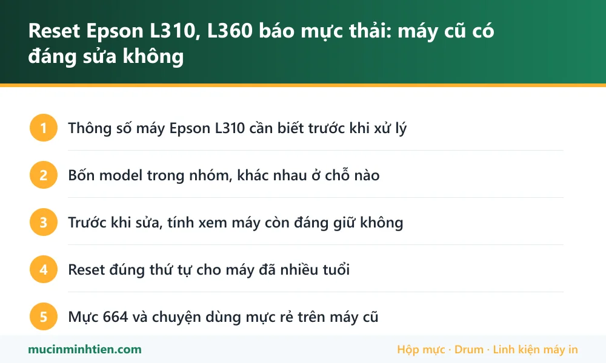

Reset Epson L310, L360 báo mực thải: máy cũ có đáng sửa không

Epson L310, L360 và nhóm L300, L350 nháy đèn rồi ngừng in khi bộ đếm mực thải đầy. Cách xử lý giống các dòng sau: đọc mức bộ đếm, thay tấm thấm, rồi reset bằng bản đúng model. Nhưng với nhóm máy đã nhiều tuổi này, nên tính thêm một bước: cộng hết chi phí sửa rồi so với giá một máy mới cùng tầm trước khi quyết định.
Thông số máy Epson L310 cần biết trước khi xử lý
Biết đúng máy mình đang dùng loại nào giúp khỏi mua nhầm vật tư và khỏi làm theo hướng dẫn của dòng khác.
| Hạng mục | Chi tiết |
|---|---|
| Kiểu máy | In phun bình mực khổ A4 — L300, L310 chỉ in; L350, L360 có thêm scan và copy |
| Mực dùng | Epson 664 — bốn màu BK/C/M/Y, dạng chai châm vào bình |
| Màn hình | Không có. Mọi thông báo đọc qua đèn báo |
| Bộ đếm mực thải | Có. Đầy thì máy khoá hoàn toàn, kể cả scan trên bản đa năng |
| Tuổi máy | Dòng ra mắt đã lâu — phần lớn máy đang dùng đã qua nhiều năm, cần tính tới chi phí sửa tổng thể |
Bốn model trong nhóm, khác nhau ở chỗ nào
Người dùng hay gọi chung là "dòng L3xx" nhưng bốn máy này khác nhau thật:
- L300 và L310 — chỉ in, không scan. L310 là bản sau, cải tiến tốc độ.
- L350 và L360 — đa năng, có scan và copy. L360 là bản sau của L350.
Cả bốn cùng dùng mực 664 nên châm mực thì giống nhau, nhưng bản phần mềm reset thì riêng từng model. Đọc tên model in ở mặt trước máy trước khi tải, đừng đoán theo hình dáng vì bốn máy này nhìn khá giống nhau.
Trước khi sửa, tính xem máy còn đáng giữ không
Đây là phần khác biệt so với dòng L1210 hay L3210 còn mới. Máy nhóm này đã nhiều năm tuổi, nên trước khi bỏ tiền nên cộng đủ:
- Tiền khoá kích hoạt phần mềm reset.
- Tiền mút thấm mới, nếu mút cũ đã chai.
- Khả năng phải vệ sinh hoặc thay đầu phun — máy càng cũ thì đầu phun càng dễ tắc, và đây mới là khoản đắt.
- Nếu bánh răng kéo giấy đã mòn thì cộng thêm quả đào, bố thắng.
Nguyên tắc bên mình vẫn tư vấn thẳng: tổng chi phí sửa vượt quá nửa giá một máy mới cùng tầm thì nên thay máy. Máy chỉ tràn bộ đếm mà mọi thứ khác còn tốt thì sửa rất đáng — chi phí nhỏ, máy chạy tiếp được nhiều năm. Kỹ thuật viên kiểm tra xong sẽ nói rõ máy thuộc nhóm nào trước khi khách quyết.
Reset đúng thứ tự cho máy đã nhiều tuổi
- Đọc mức bộ đếm bằng phần mềm. Trên 95% là đúng bệnh. Máy cũ hay khoá vì lý do khác — cảm biến bẩn, kẹt giấy vụn tích tụ nhiều năm — nên bước kiểm này quan trọng hơn với máy mới.
- Mở đáy máy, lấy mút thấm. Máy chạy nhiều năm thì mút thường đã chai cứng chứ không chỉ no mực, giặt không ăn thua, nên thay mới.
- Vệ sinh luôn khoang đáy. Mực khô đóng cục trong khoang là chuyện bình thường ở máy cũ, nên cạo sạch trước khi lắp mút mới.
- Chạy đúng bản reset cho model, tắt máy, bật lại.
- In trang kiểm tra đầu phun. Máy cũ rất hay lộ thêm bệnh đầu phun ngay sau khi mở khoá — xem cách vệ sinh đầu phun.
Mực 664 và chuyện dùng mực rẻ trên máy cũ
Máy nhóm này đã khấu hao gần hết nên nhiều người chuyển sang mực rẻ nhất tìm được. Đây là chỗ hay mất tiền oan: mực kém làm tắc đầu phun, tắc thì phải bấm vệ sinh, mỗi lần vệ sinh lại đẩy bộ đếm mực thải lên — vòng lặp dẫn thẳng tới lần reset tiếp theo sớm hơn.
Chênh lệch giữa mực tốt và mực rẻ nhất chỉ vài chục nghìn mỗi chai, trong khi một lần thay đầu phun đắt hơn nhiều lần. Với máy cũ, dùng mực đúng chuẩn là cách rẻ nhất để kéo dài tuổi thọ.
Bảng tra: dấu hiệu nào ứng với nguyên nhân nào
| Dấu hiệu | Nguyên nhân | Cách xử lý | Chi phí |
|---|---|---|---|
| Đèn nháy, máy không in, kể cả scan cũng ngừng | Bộ đếm mực thải đầy | Thay mút thấm rồi reset đúng bản model | Kiểm tra rồi báo giá |
| Reset xong in ra trắng hoặc sọc nặng | Đầu phun đã khô lâu ngày trên máy cũ | Vệ sinh đầu phun, nặng thì ngâm rửa | từ 100.000 đ |
| Máy kéo giấy không đều, nhai giấy | Quả đào và bố thắng mòn theo tuổi máy | Thay bộ kéo giấy | Kiểm tra rồi báo giá |
| Mực khô đóng cục dưới khoang đáy | Mút thấm đã chai, mực không thấm được nữa | Vệ sinh khoang, thay mút mới | Kiểm tra rồi báo giá |
| Sửa xong vài tháng lại hỏng chỗ khác | Máy đã hết tuổi kinh tế | Cân nhắc thay máy thay vì sửa tiếp | — |
Vật tư cho Epson L310 có sẵn tại kho 77 Bắc Hải, Phường Diên Hồng, TP.HCM — xem bảng giá 773 mã hoặc gọi 0986 704 260 kèm model máy.
Khi nào nên gọi kỹ thuật viên
- Máy đã nhiều năm và chưa lần nào được vệ sinh khoang mực thải
- Có mực khô đóng cục dưới gầm hoặc vệt mực trên mặt bàn
- Reset xong bản in vẫn trắng hoặc sọc nặng
- Không chắc máy mình là L300, L310, L350 hay L360
- Muốn nghe tư vấn thẳng: nên sửa tiếp hay thay máy mới
Báo giá xử lý Epson L310 tận nơi
| Hạng mục | Giá tham khảo |
|---|---|
| Vệ sinh khoang đáy, thay mút thấm | Kiểm tra rồi báo giá |
| Reset bộ đếm kèm bảo dưỡng | Kiểm tra rồi báo giá |
| Vệ sinh đầu phun | từ 100.000 đ |
| Thay bộ kéo giấy (quả đào, bố thắng) | Kiểm tra rồi báo giá |
| Mực Epson 664 (mỗi màu) | Xem bảng giá vật tư |
Kỹ thuật viên kiểm tra và báo giá trước khi làm — xem cam kết ở dịch vụ sửa máy in tận nơi TP.HCM.
Cách phòng tránh tái phát
- Dùng mực đúng chuẩn — trên máy cũ, mực rẻ gây tắc nhanh hơn hẳn và kéo theo nhiều lần vệ sinh.
- In vài trang mỗi tuần, máy nằm im lâu là đầu phun khô.
- Mỗi lần reset nên thay mút thấm mới thay vì giặt lại mút đã chai.
- Đặt máy nơi khô ráo, tránh góc ẩm — máy cũ nhạy với ẩm hơn máy mới.
